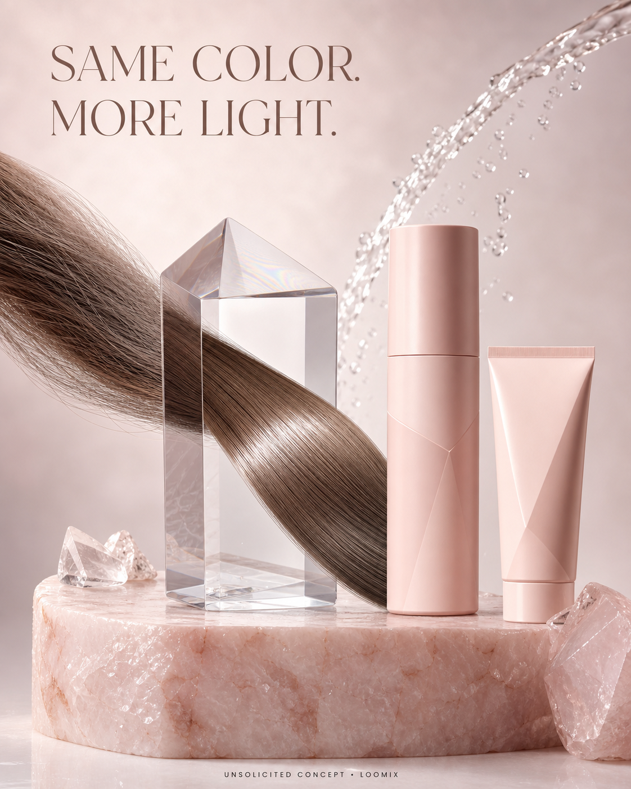

Concept created by LoomixUnsolicited concept
Kristin Ess HairReels + TikTok9:168 seconds
Crystal Quartz Hair Gloss — Same Color, More Light
A natural strand passes through a clear quartz prism without changing shade. It emerges smoother and more reflective, turning “colorless gloss” into one immediate visual transformation.
Create with LoomixView official product
Hook options
“Same color. More light.”
“Your shade, turned up.”
“Clear gloss. Visible difference.”
8-second storyboard
Open on one dull natural strand.
Reveal the transparent Crystal Quartz prism.
Guide the strand through the prism.
Keep its shade visually unchanged.
Add a clean, glass-like highlight on exit.
End on the kit, prism, hook, and CTA.
Caption direction
A crystal-clear before-and-after that shows how an at-home colorless gloss can amplify shine while keeping the shade you already love.
Made for rapid testing
Loomix turns one product image into a storyboard, short-video direction, captions, and ready-to-post ad copy.
This is an unsolicited creative concept made by Loomix for demonstration purposes. Loomix is not affiliated with or endorsed by Kristin Ess Hair.